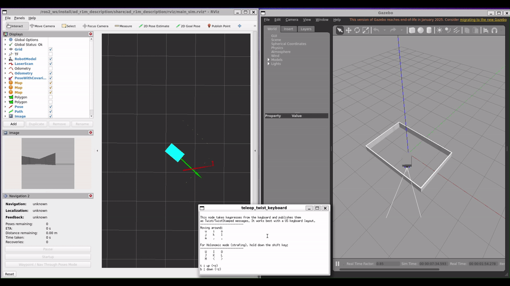
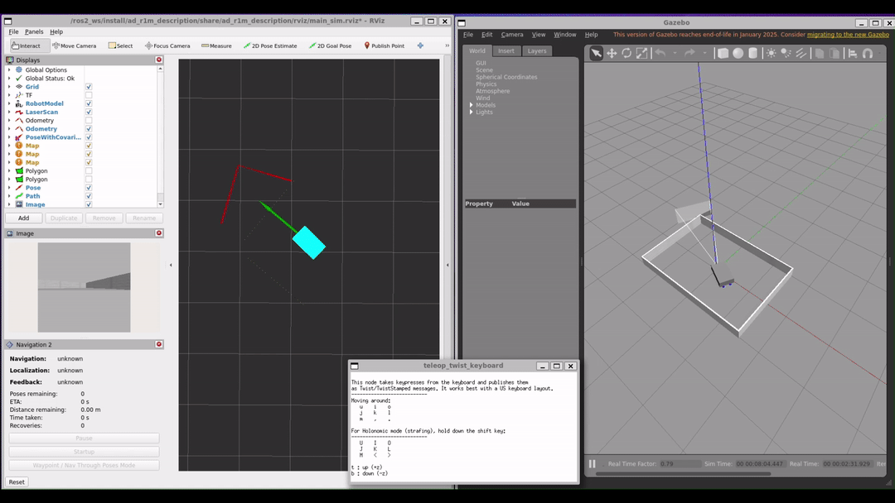
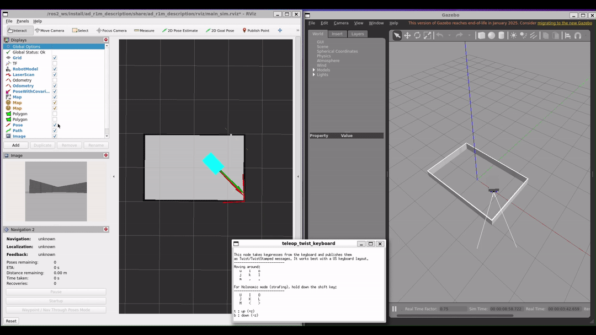

AD-R1M Gazebo Simulation with Docker
Run the AD-R1M Gazebo Classic simulation in a container on Linux or Windows.
Prerequisites
Install Docker Engine and Buildx:
# Add Docker's official GPG key and repository
sudo apt update
sudo apt install -y ca-certificates curl
sudo install -m 0755 -d /etc/apt/keyrings
sudo curl -fsSL https://download.docker.com/linux/ubuntu/gpg -o /etc/apt/keyrings/docker.asc
sudo chmod a+r /etc/apt/keyrings/docker.asc
echo "deb [arch=$(dpkg --print-architecture) signed-by=/etc/apt/keyrings/docker.asc] https://download.docker.com/linux/ubuntu $(. /etc/os-release && echo $VERSION_CODENAME) stable" | sudo tee /etc/apt/sources.list.d/docker.list > /dev/null
# Install Docker Engine, CLI, container runtime, Buildx, and Compose
sudo apt update
sudo apt install -y docker-ce docker-ce-cli containerd.io docker-buildx-plugin docker-compose-plugin
# Allow running Docker without sudo
sudo usermod -aG docker $USER
Log out and back in, then verify with docker buildx version.
Windows 11 required for WSLg (auto GUI forwarding).
Install WSL 2 from PowerShell as Administrator:
wsl --installReboot, create a Linux user on first launch
Enable systemd inside WSL:
sudo tee /etc/wsl.conf > /dev/null <<'EOF' [boot] systemd=true EOF
From PowerShell:
wsl --shutdown, then reopenwslInstall Docker Engine and Buildx:
# Add Docker's official GPG key and repository sudo apt update sudo apt install -y ca-certificates curl sudo install -m 0755 -d /etc/apt/keyrings sudo curl -fsSL https://download.docker.com/linux/ubuntu/gpg -o /etc/apt/keyrings/docker.asc sudo chmod a+r /etc/apt/keyrings/docker.asc echo "deb [arch=$(dpkg --print-architecture) signed-by=/etc/apt/keyrings/docker.asc] https://download.docker.com/linux/ubuntu $(. /etc/os-release && echo $VERSION_CODENAME) stable" | sudo tee /etc/apt/sources.list.d/docker.list > /dev/null # Install Docker Engine, CLI, container runtime, Buildx, and Compose sudo apt update sudo apt install -y docker-ce docker-ce-cli containerd.io docker-buildx-plugin docker-compose-plugin # Allow running Docker without sudo sudo usermod -aG docker $USER
Log out and back in, then verify:
docker buildx version && echo $DISPLAY
Get the image
Option A: Pull from Cloudsmith
Requires Cloudsmith credentials. Log in first:
docker login docker.cloudsmith.io
docker pull docker.cloudsmith.io/adi/adrd-common/ad-r1m:sim-humble-nightly
Option B: Build locally
git clone https://github.com/analogdevicesinc/ad-r1m-ros2.git
cd ad-r1m-ros2
docker buildx build . \
-f docker/Dockerfile \
--target dev \
--build-arg BUILD_PACKAGES=ad_r1m_sim \
-t ad-r1m:sim-humble-base
Add xterm for the integrated teleop window:
echo 'FROM ad-r1m:sim-humble-base' > docker/Dockerfile.xterm
echo 'RUN apt-get update && apt-get install -y --no-install-recommends xterm && rm -rf /var/lib/apt/lists/*' >> docker/Dockerfile.xterm
docker buildx build . -f docker/Dockerfile.xterm -t ad-r1m:sim-humble
Tip
On Windows, clone under ~/ inside WSL — /mnt/c/ is much
slower for Docker I/O.
Run the simulation
Step 1: Set image variable
# If using Cloudsmith image:
IMAGE=docker.cloudsmith.io/adi/adrd-common/ad-r1m:sim-humble-nightly
# If built locally with xterm:
IMAGE=ad-r1m:sim-humble
Step 2: Allow X11 access (Linux only, skip on WSL)
xhost +local:docker
Step 3: Launch Gazebo
docker run --rm -it \
-e DISPLAY \
--net=host --ipc=host --pid=host \
-v /tmp/.X11-unix:/tmp/.X11-unix:ro \
-v /dev/shm:/dev/shm \
$IMAGE \
ros2 launch ad_r1m_gazebo launch_sim.launch.py
Gazebo and RViz open. If using the locally built image with xterm, a teleop window also opens.
{kind=link}

Note
If using the Cloudsmith image or the base image without xterm, launch teleop in a separate terminal:
docker run --rm -it --net=host --ipc=host --pid=host \
$IMAGE \
ros2 run teleop_twist_keyboard teleop_twist_keyboard
Teleop keys:
u i o
j k l
m , .
q/z : increase/decrease max speeds by 10%
Step 4: Launch localization (new terminal)
docker run --rm -it --net=host --ipc=host --pid=host \
-v $(pwd)/ad_r1m_navigation:/ros2_ws/ros_data:ro \
$IMAGE \
ros2 launch ad_r1m_navigation localization_launch.py \
use_sim_time:=true \
params_file:=/ros2_ws/ros_data/config/nav2_params_sim.yaml \
map:=/ros2_ws/ros_data/maps/world.yaml
{kind=link}

Step 5: Launch navigation (new terminal)
docker run --rm -it --net=host --ipc=host --pid=host \
-v $(pwd)/ad_r1m_navigation:/ros2_ws/ros_data:ro \
$IMAGE \
ros2 launch ad_r1m_navigation navigation_launch.py \
use_sim_time:=true \
params_file:=/ros2_ws/ros_data/config/nav2_params_sim.yaml
{kind=link}

Tip
Mounting the config directory lets you edit parameters locally and restart the container without rebuilding.
Troubleshooting
- “BuildKit is enabled but the buildx component is missing”
You have
docker.ioinstead ofdocker-ce. Reinstall from the official Docker repository.- Gazebo/RViz blank or “Copy mode” (Windows/WSL)
Run
wsl --update && wsl --shutdownfrom PowerShell, then retry. If still broken, add-e LIBGL_ALWAYS_SOFTWARE=1to docker run.- “cannot open display”
Run
xhost +local:docker(Linux) or verify$DISPLAYis:0(WSL).- Containers can’t see each other
All containers must use
--net=host --ipc=host --pid=host.
See also
10) AD-R1M Gazebo simulation — NVIDIA® Jetson™ AGX Orin Gazebo simulation (requires NVIDIA® Jetson™ AGX Orin and NVIDIA® Isaac™ ROS Visual SLAM Integration)
{kind=link}